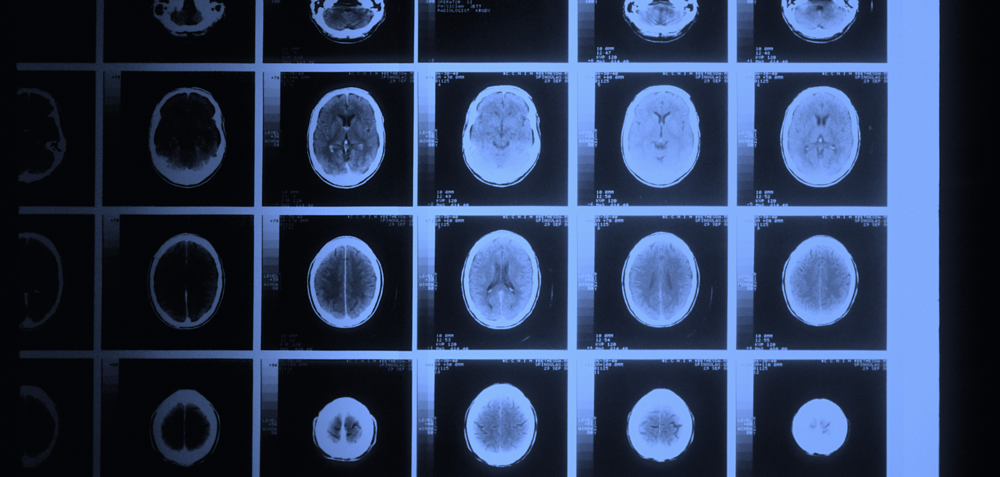
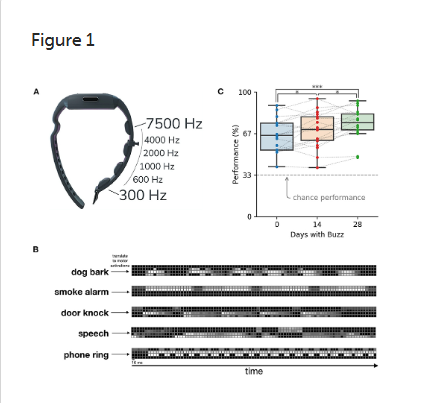
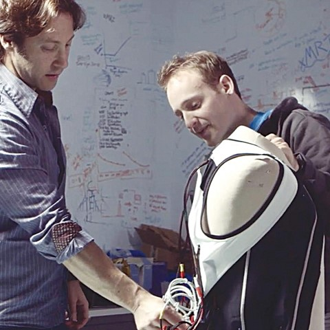

adj. relating to the sense of touch, in particular relating to the perception and manipulation of objects using the senses of touch and proprioception.
The Problem
“We are trapped on a very thin slice of perception” (David Eagleman). We only see a tiny percentage of colors, sounds, and feelings. There are cellphone and radio signals we cannot hear and colors cannot see. These things are not unseeable. The problem is we are not naturally equipt with the sensors to pick them up.

The Brain
Our brains are master data interpreters; it figures out how to read any data it is given. Electrical signals from our eyes, ears, and nerves are converted into interpretations of the world around us. “Due to the brain's remarkable flexibility, there is the possibility of leveraging entirely new data streams directly into perception” (Hawkins and Blakeslee, 2007; Eagleman, 2015).
Sensory Substitution Devices
SSDs start feeding the brain data patterns in unconventional ways, such as vibrations on the skin. Over time our brains learn to read these patterns. For example, a wristband was developed that uses machine learning to listen to sounds and translate it into a vibration pattern on the wrist. People who wear the wristband, over time, can "hear" what is around them. Vests to help the deaf can be built 40 times cheaper than cochlear implants.


Sensory Addition Devices
With this technology, what data can be added to our perception? The brain can learn to interpret any data not just data from the five senses. Information about the stock market, pilot data, economic systems, personal health, and infrared or ultraviolet light could all become part of our perception. Our world is so data heavy. Finding senses that interpret that data will be life-changing.
A world is detectable that previously was not: palpable shapes live around microwave ovens, computer fans, speakers, and subway power transformers.